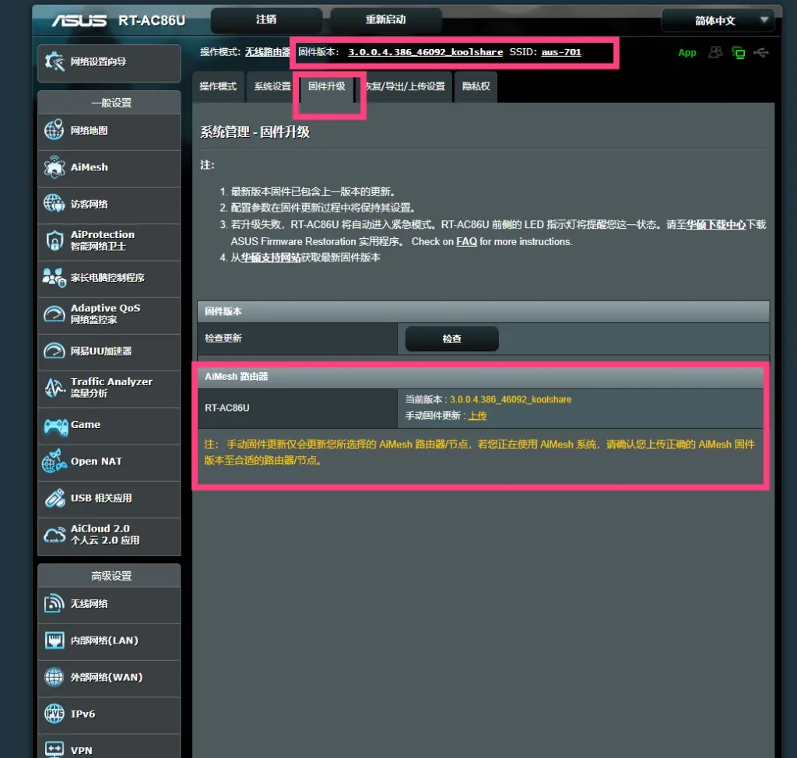
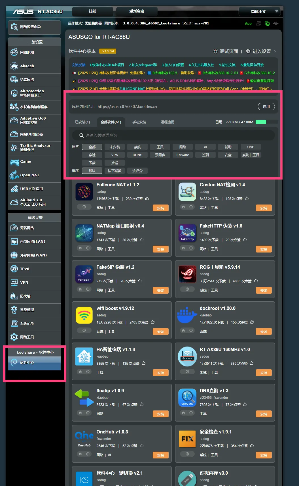

华硕路由器梅林固件刷机教程
机型选择、固件下载、刷机步骤与验证，新手也能一次刷成功
目录
快速导航
全篇共 7 章，覆盖硬件选型、固件下载、备份、刷机、恢复出厂、验证与软件中心开启。
Part 1
1. 硬件准备
推荐使用以下华硕路由器型号，均支持梅林固件与第三方插件生态：
| 型号 | CPU | 内存 | 接口 | Wi-Fi |
|---|---|---|---|---|
| RT-AX86U Pro | 博通四核 2.0GHz | 1GB | 2.5G+4×1G | Wi-Fi 6 |
| RT-AX88U Pro | 博通四核 2.0GHz | 1GB | 2.5G+8×1G | Wi-Fi 6 |
| RT-BE86U | 博通四核 2.6GHz | 2GB | 2.5G+多口千兆 | Wi-Fi 7 |
| GT-AX6000 | 博通四核 2.0GHz | 1GB | 2.5G+4×1G | Wi-Fi 6 |
| RT-AC86U | 博通双核 1.8GHz | 512MB | 1G WAN+4×1G LAN | Wi-Fi 5 |
入门级推荐 RT-AC86U；追求性能与性价比首选 RT-AX86U Pro；高端旗舰可选 RT-BE86U。
Part 1
2. 固件下载
KoolCenter（推荐）：fw.koolcenter.com — 提供官改与梅林改版固件，按机型选择对应版本。
梅林官方：www.asuswrt-merlin.net — 原版梅林固件。
常用机型直达：RT-AX86U Pro · RT-AX86U · RT-AX88U Pro · RT-AX68U · TUF-AX3000 · TUF-AX5400 · RT-BE86U · RT-BE88U · RT-BE96U
固件命名规则：
102.x_y— 新平台/新内核，适用于 Wi-Fi 7/BE 系列及部分 AX 机型388.x_y— Wi-Fi 6/AX 系列主线分支386.x_y— 较老机型
下载后务必核对 MD5 校验值，确保文件完整。
刷回官方固件：华硕下载中心。搜索机型后进入「驱动程序和工具软件」→「BIOS 与固件」，下载官方固件并按同样方式上传刷回；完成后建议恢复出厂设置。
Part 1
3. 备份设置
刷机前务必备份当前配置，避免丢失宽带账号、Wi-Fi 密码等设置。
- 登录路由器管理界面（如
http://192.168.50.1或http://router.asus.com） - 进入 系统管理 → 备份/恢复/导出设置
- 点击 下载 保存当前配置到本地
Part 1
4. 刷入固件
- 进入 系统管理 → 固件升级
- 点击「选择文件」，选择下载的
.w固件文件 - 点击「上传」开始刷机
- 等待 3–5 分钟，期间请勿断电或重启
- 路由器会自动重启完成升级
Part 1
5. 恢复出厂
刷机完成后建议执行一次恢复出厂设置，以避免旧配置与新固件冲突。
- 进入 系统管理 → 恢复/导出/上传设置
- 勾选「恢复」旁的复选框，点击「恢复」按钮
- 路由器重启后，重新进入向导设置宽带、Wi-Fi 等基础参数
Part 1
6. 验证版本
登录路由器管理界面，确认固件版本字符串显示为「Merlin」或「koolshare」字样，说明梅林固件已成功刷入。
同时检查是否出现「软件中心」入口，这是后续安装第三方插件的前提。

Part 1
7. 软件中心
若固件来自 KoolCenter，通常已自带软件中心。若未显示或需更新：
- 进入 KoolCenter 官网，按机型下载对应软件中心安装包
- 在路由器管理界面中找到「软件中心」或「离线安装」入口
- 上传并安装软件中心，完成后刷新页面
